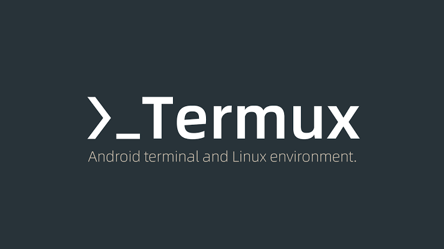
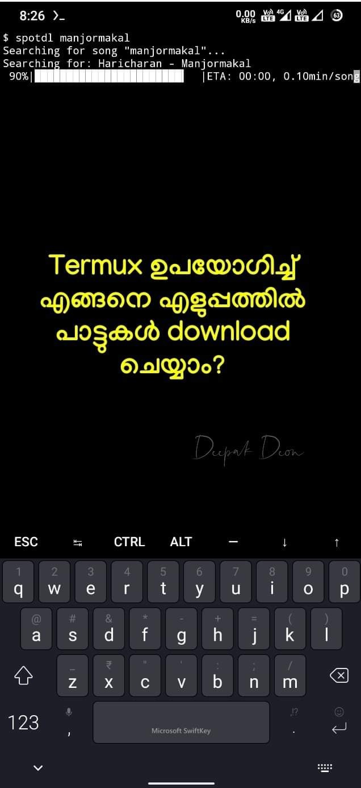

Termux ആദ്യമായി ഉപയോഗിക്കുന്ന, basics പോലും അറിയാത്ത ഏതൊരാൾക്കും വളരെ ഈസിയായി ചെയ്യാവുന്ന കാര്യമാണിത്.
• ആദ്യമായി play store ൽ നിന്നും Termux ഇൻസ്റ്റാൾ ചെയ്യുക.
>> Install Termux
• ഇനി Termux open ചെയ്ത് താഴെ കാണുന്ന 7 കമാൻഡുകൾ അതേപോലെ തന്നെ ഓരോന്നായി ടൈപ്പ് ചെയ്ത് enter അമർത്തുക.
1. termux-setup-storage
(Termux ആപ്പിന് storage permission കൊടുക്കാനുള്ള command ആണ്. Allow ചെയ്യുക.)
2. cd storage
3. ls
4. cd music
(നമ്മൾ പാട്ടുകൾ download ചെയ്യാൻ പോകുന്നത് internal storage ലെ music എന്ന ഫോൾഡറിലേക്കാണ്, ആ ഫോൾഡറിൽ എത്താനുള്ള 3 commands ആണ് മുകളിൽ ഉള്ളത്.)
ഇനി tool install ചെയ്യാനുള്ള 3 commands ആണ് താഴെ, ഓരോന്നും install ആവാൻ ചെറിയ സമയം എടുക്കും.
NB (UPDATE): Termux has haulted all update through Google. Download it from F-droid.
ആദ്യത്തെ 4 steps നു ശേഷം termux-change-repo എന്ന് ടൈപ്പ് ചെയ്ത് enter ചെയ്യുക. ശേഷം വരുന്ന മെനുവിൽ ഏതെങ്കിലും mirror സെലക്ട് ചെയ്ത് ok കൊടുക്കുക. പിന്നീട് 5th step മുതൽ ചെയ്യാം.
5. pkg install python
6. pkg install ffmpeg
7. pip3 install spotdl
കഴിഞ്ഞു!!! (മുകളിൽ ഉള്ള 7 steps installation ആണ്, ഒറ്റ തവണ ചെയ്താൽ മതി.)
ഇനി പാട്ട് ഡൌൺലോഡ് ചെയ്യുന്നത് എങ്ങനെയാണെന്ന് നോക്കാം...
spotdl എന്നാണ് നമ്മുടെ കമാൻഡ്.
അതായത്,
spotdl despacito എന്ന് ടൈപ്പ് ചെയ്ത് enter അടിച്ചാൽ ആ പാട്ട് ഡൗൺലോഡ് ആവും.
(സ്ക്രീൻഷോട്ട് നോക്കുക.)

NB: മംഗ്ലീഷ് keyboard Termux ൽ work ആയേക്കില്ല.
Tips:
ഒന്നിലധികം വാക്കുകൾ ഉള്ള keywords സേർച്ച് ചെയ്യുമ്പോൾ ഇടക്ക് "-" ചേർക്കുക.
For example, മലരേ മൗനമാ എന്ന പാട്ട് search ചെയ്യേണ്ടത് "spotdl malare-mounama" എന്നാണ്.
spotdl malare mounama എന്ന് സെർച്ച് ചെയ്താൽ, malare എന്ന പാട്ടും mounama എന്ന പാട്ടും വെവ്വേറെ download ആവും.
So, നാലോ അഞ്ചോ പാട്ടുകൾ ഒരുമിച്ച് ഇങ്ങനെ download ചെയ്യാം.
spotdl ente-khalbile malare-mounama nenjukkul-peydhidum
Spotify playlist/album ലിങ്ക് കോപ്പി ചെയ്തിട്ട് keyword ആയി use ചെയ്താൽ ആ playlist or album ലെ പാട്ടുകൾ മുഴുവനായി ഇങ്ങനെ ഡൗൺലോഡ് ചെയ്യാം.
-DeOn-
[ Add a comment to this post ]